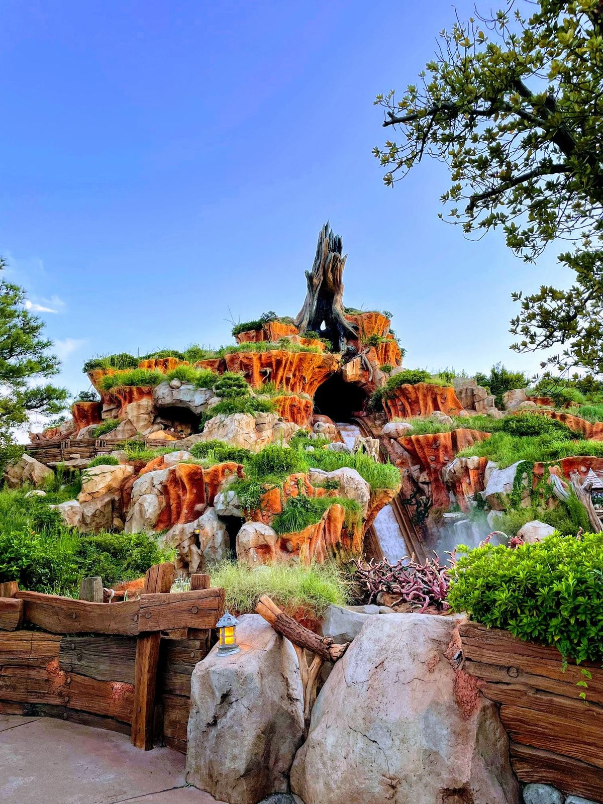
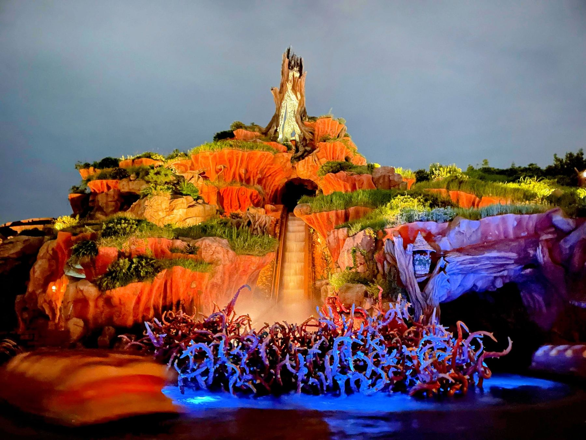

アメリカ河の最奥にひっそりと佇む、緑豊かでユーモラスな小動物たちの国「クリッターカントリー」。その象徴である「スプラッシュ・マウンテン」の頂から流れ落ちる激しい滝には、かつてのどかな丘だったこの地を襲った大洪水の歴史が刻まれています。
もともとこの山は「チカピンヒル」と呼ばれる穏やかな丘でした。しかしある日、丘の奥で密造酒を作っていたアライグマの「ラケッティ」が、調合を誤り自家製の蒸留器を大爆発させてしまいます。その衝撃でビーバーたちの頑丈なダムが決壊し、大量の水が一気に溢れ出してふもとを水浸しにしました。この大洪水以降、クリッターたちはこの丘を「スプラッシュ・マウンテン（水しぶきの山）」と呼ぶようになったのです。
大洪水により開拓途中だった人間たちは退去していきましたが、水分をたっぷり含んだ肥沃な泥地は、小動物たちにとって絶好のフロンティアとなりました。彼らは人間が残していった道具や大自然の木の根を再利用して家や作業場を作り始め、独自の文明を持つ小さな国が完成したのです。
ゲストが乗り込む丸太のボートは、チカピンヒルの内部を進みながら、日本ではおなじみの「うさぎどん」の冒険を追体験していきます。これは、退屈な我が家を飛び出し「笑いの国」を探し求めた彼の、知恵と故郷の物語です。
旅の途中で彼を狙うのは、ずる賢い「きつねどん」と、力持ちだけど少し間抜けな「くまどん」。うさぎどんは持ち前の機転で罠を何度もかいくぐりますが、ついにきつねどんに捕まり、丘の頂上で絶体絶命の危機を迎えます。
私たちが親しみを持って呼んでいる「うさぎどん」「きつねどん」「くまどん」という名前。実は英語のオリジナル版では、それぞれ「Br'er Rabbit（ブレア・ラビット）」「Br'er Fox（ブレア・フォックス）」「Br'er Bear（ブレア・ベア）」と呼ばれています。
この「ブレア（Br'er）」という言葉、実はアメリカ南部の方言（なまり）で「Brother（お兄さん・兄弟）」を意味する言葉が縮まったものです。
つまり、そのまま英語通りに直訳すると「うさぎのお兄さん」「きつねの兄貴」となります。しかし、日本のディズニーに導入される際、翻訳家たちはこれを単に「うさぎ兄さん」と直訳するのをやめ、日本の昔話のような温かみと愛嬌を込めて、親しみやすい「〜どん」という言葉でローカライズしました。単なる言葉の置き換えではなく、日本の子供たちにもスッと馴染むように計算された、素晴らしい「言葉の魔法」なのです。
きつねどんの罠にかかり絶体絶命のうさぎどんは、命がけの「最後のはっぱり（嘘）」をつきました。「煮るなり焼くなり好きにしてくれ。でも、あそこの『茨の茂み（Briar Patch）』にだけは放り込まないでくれ！」と。間抜けな彼らは、うさぎどんが最も嫌がることをしようと、彼を茨の茂みへと投げ落とします。この落下こそが、ゲストが体験する最大傾斜45度のスリリングな急降下なのです。
実はうさぎである彼にとって、トゲに囲まれた茨の茂みは「自分が生まれ育った最も安全な我が家」でした。彼らの裏をかいて無事生還したうさぎどんは、やっぱり自分が元いた故郷こそが最高の「笑いの国」だったと気づき、クリッターたちが総出で彼の帰還を歓迎する、お祝いに満ちたフィナーレ（Zip-A-Dee-Doo-Dah）で幕を閉じます。
クリッターカントリーにあるすべての施設は、大洪水の歴史とキャラクターたちの物語の中にシームレスに組み込まれています。
グランマ・サラのキッチン（レストラン）
ジャコウネズミの「サラ・オズボーン（サラおばあちゃん）」が営むレストラン。彼女はクリッターで一番の料理の達人であり、自宅を開放しました。この建物は、大洪水のあとに腕利きの建築家である「ビーバーブラザーズ」が、頑丈な木の根や泥を巧みに利用して建てた2階建ての巣の構造をしています。
ラケッティのラクーンサルーン（軽食）
かつて大爆発を起こしたアライグマの「ラケッティ」のお店。彼はあの大事故のあと深く反省し、密造酒造りから完全に足を洗いました。現在は、訪れるゲストのために爽やかで安全なソフトクリームやチュロスを販売しています。看板に自分の顔を描いているのは、彼の誠実な決意の証なのです。
フート＆ハラー・ハイドアウト（ショップ跡）
ここはもともと、クリッターの子供たちが大人の目を盗んで集まる「秘密基地（ハイドアウト）」でした。店名の「フート（フクロウの鳴き真似）」と「ハラー（大声の叫び）」は、子供たちが秘密基地に入るための「合言葉」からきており、ショップとしての営業を終えた今も、子供たちの遊び場であった痕跡をその場所に残しています。
クリッターカントリーは、隣接する「ウエスタンランド」と地続きのアメリカ開拓史のグラデーションを持っています。
ウエスタンランドは「19世紀後半のアメリカ西部の開拓街」であり、人間が作った文明の賑やかさがあります。そこからビッグサンダー・マウンテン側を抜け、クリッターカントリーへと歩みを進めると、だんだんと植物の緑が深く、濃くなっていきます。「人間が開拓したフロンティアの街」のすぐ隣には、「野生の小動物たちが独自の知恵で生きる深い森」が広がっているという、アメリカの大自然の圧倒的な奥行きが、歩くだけで体感できるように設計されているのです。
ディズニーの空間デザイナー「イマジニア」たちは、このエリアを「本当に小動物たちが暮らしている場所」にするため、驚異的なギミックを仕込みました。エリアに入ると分かりますが、小動物たちが作ったドア、窓、階段、看板、さらには街灯にいたるまで、すべて人間のサイズより一回りも二回りも小さく作られています。これにより、ゲストはエリアに足を踏み入れた瞬間、自分自身が絵本の中のクリッターサイズに縮んでしまったかのような錯覚（強制遠近法）を覚えます。
また、道端のあちこちには、人間（ハンター）のブーツの足跡が残されています。クリッターたちはハンターに怯えるどころか、彼らの仕掛けたトラップを生活道具に改造し、残された大きなブーツを「植木鉢」や「看板」としてユーモアたっぷりに再利用して暮らしています。このような高い知性とたくましさが、エリアの至る所で表現されています。
これまで、世界中の複数のディズニーパークに存在したスプラッシュ・マウンテン。しかし現在、その歴史は極めて大きな変革期を迎えています。
アメリカ・フロリダのウォルト・ディズニー・ワールドおよび、カリフォルニアのディズニーランドでは、長年親しまれたスプラッシュ・マウンテンが完全にクローズされ、映画『プリンセスと魔法のキス』をテーマにした「ティアナのバイユー・アドベンチャー（Tiana's Bayou Adventure）」というまったく新しいアトラクションへと生まれ変わりました。

これにより、1946年の映画『南部の唄』をベースにしたクラシックなスプラッシュ・マウンテンと、名曲「ジッパ・ディー・ドゥー・ダー（Zip-A-Dee-Doo-Dah）」を乗車中に聴くことができるアトラクションは、全世界で唯一、この「東京ディズニーランド」だけに遺されることになったのです。アメリカのオリジナルが新時代へと移行する中で、ここ日本のクリッターカントリーだけが、うさぎどんたちの陽気で心優しい冒険の歴史を今もそのまま守り続けている、世界でも極めて貴重な「約束の地」となっています。
最終編集日：